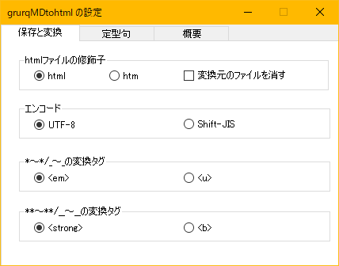
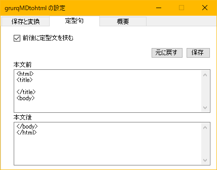

 
C#で作られた、markdown記法の変換ソフトです。
Windows 10(64bit)のみで動作確認しています。
exeファイルにドラッグ＆ドロップして、md形式をhtm/htmlファイルに変更できます。
また、前後に定型句を挿入できます。
設定変更はダブルクリック（通常実行）起動で行なえます。
**または__で囲まれた文字をstrongまたはbタグで囲みます）
*または_で囲まれた文字をemまたはuタグで囲みます）
~~で囲まれた文字をsタグで囲みます)
詳細はmarkdown記法の解説文献を参照してください。公式サイト
通常起動すると、オプションで以下の指定ができます。
＞作者または著作権者は、契約行為、不法行為、またはそれ以外であろうと、ソフトウェアに起因または関連し、あるいはソフトウェアの使用またはその他の扱いによって生じる一切の請求、損害、その他の義務について何らの責任も負わないものとします。
Copyright (c)2020 grurq Released under the MIT license
https://opensource.org/licenses/mit-license.php (日本語訳:osdn)
DOBON.NET様よりソースコードを多く参考にさせていただきました。ありがとうございます。
http://dobon.net/vb/index.html
本ソフト作成のためには
『Markdownライティング入門 プレーンテキストで気楽に書こう！ (技術の泉シリーズ（NextPublishing)』（藤原 惟）
を参照しました。